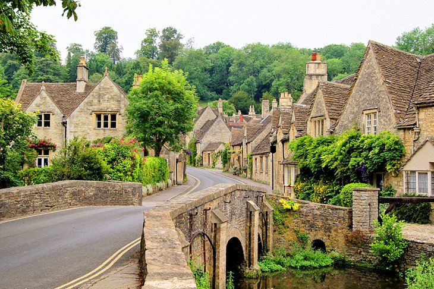

1. Stonehenge Stonehenge, 10 miles north of the historic city of Salisbury on Salisbury Plain, is Europe's best-known prehistoric monument.

2. Tower Of London Prison, palace, treasure vault, observatory, and menagerie: the Tower of London has done it all and it's one of the top attractions in London.

3. The Roman Baths and Georgian City of Bath
If you only have time to visit one smaller city in England, you couldn't do much better than Bath.

4. The British Museum
With collections of antiquities that are among the world's finest, the British Museum holds more than 13 million artifacts from Assyria, Babylonia, Egypt, Greece, the Roman Empire, China, and Europe.
5. York Minster and Historic Yorkshire
The magnificent York Minster is second in importance in the Church of England only to the cathedral at Canterbury.

6. Chester Zoo
Located in Upton, just over a mile north of Chester city center, Chester Zoo is England's most visited attraction outside of London and is one of the best places to visit in England for families.

7. Lake District National Park
Covering some 900 square miles, Lake District National Park is a must-visit destination for travelers to England.

8. Canterbury Cathedral
Located in the heart of the historic city that bears its name, Canterbury Cathedral (a UNESCO World Heritage Site) is home to the Archbishop of Canterbury and is the cradle of English Christianity.

9. Eden Project
The incredible Eden Project is a collection of unique artificial biomes containing an amazing collection of plants from around the world.

10. The Cotswolds
The Cotswolds cover some 787 square miles and encompass parts of some of England's prettiest counties: Gloucestershire, Oxfordshire, Wiltshire, Somerset, Worcestershire, and Warwickshire.

11. The National Gallery
Displaying one of the most comprehensive collections of paintings in the world, the National Gallery is London's second-most visited museum.
12. Warwick Castle
If you're looking for a truly memorable English excursion for the whole family - and one that offers a fascinating insight into life in medieval times - you couldn't do much better than visit Warwick Castle.
13. Tate Modern
When the Tate Modern opened its new 10-storey extension in June 2016, adding 60 percent more gallery space, visitor numbers jumped by almost one-fourth, making it one of England's most visited attractions.

14. Royal Museums Greenwich
Downstream from Tower Bridge, Greenwich is the London base of the Royal Navy and holds England's largest expanses of preserved historic architecture and parks.